Switch to the last used tab in Google Chrome
AutoControl lets you redefine Chrome's factory shortcuts to perform any desired action.
Let's see how to redefine Ctrl+Tab for the following use cases:
- Switch back and forth between the last two used tabs
- Cycle through all tabs in MRU order
- Cycle through a tab list with thumbnail previews
- Combining use cases 2 and 3 in a smart way
Switch back and forth between the last two used tabs
This is the simplest case. Just set Ctrl+Tab as the trigger and Switch to previous tab as the action.
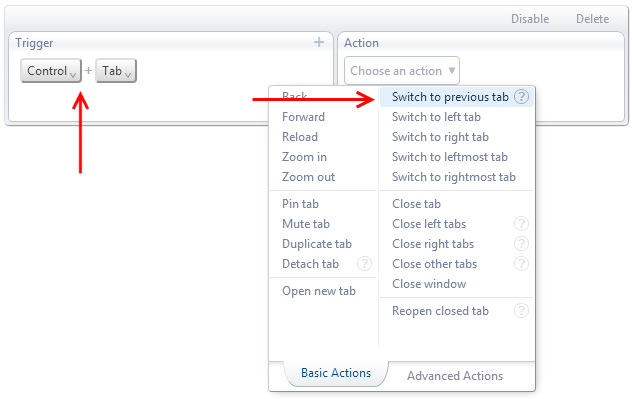
Cycle through all tabs in MRU order
Most Recently Used order means the opposite order in which you used each tab.
The idea is to keep switching back to a previously used tab until we find the one we want.
The usual technique to do this is to hold down Ctrl and then press Tab repeatedly.
Once we get to the desired tab, we release Ctrl.
So, we need two shortcuts for this:
1. Ctrl+Tab for switching back without altering the used order of the tabs.
2. Release of Ctrl for committing to the current tab.
Follow this step by step demonstration for how to do it:
Watch on YouTube
Cycle through a tab list with thumbnail previews
For this use case, we want the equivalent of the Alt+Tab task switcher in Windows, but for switching between tabs, not programs.
AutoControl has the ability to display a menu with a list of tabs and other elements.
We use the Open menu action for this, as shown below:
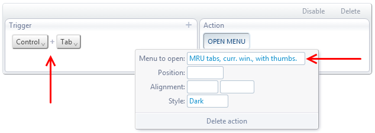
Which gives us a tab menu with thumbnail previews in MRU order, like this:
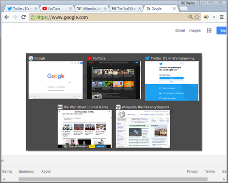
We can use the mouse or the arrow keys to select the tab we want, as a typical menu.
But we can make it better. AutoControl menus have what's called an Item Mark,
which is an outline around an item that marks the item we want to select.
We can use the move item mark action to move this mark from item to item, as shown below:
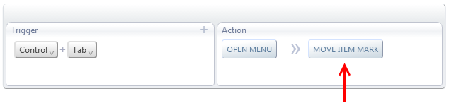
Now, when we press Ctrl+Tab, two actions are done:
First, the tab menu is opened and then the item mark moves forward.
If we press Tab again, those two actions will be done again, but since the menu is already open,
it won't be opened again and the item mark will move one more step forward, as shown below:
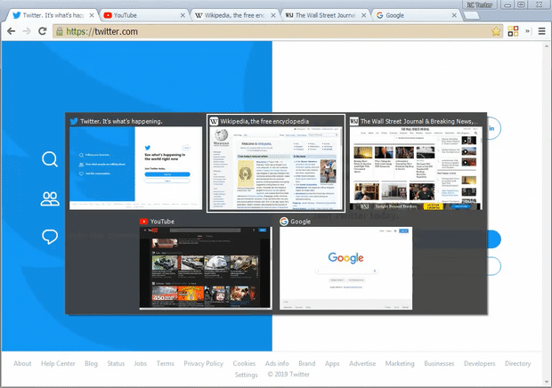
Then, when we release Ctrl, we want the marked item (the one with the border around it) to be selected and the menu closed.
That's also done with two actions in sequence, as follows:
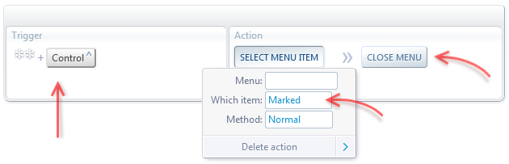
We added the double wildcard (**) to the Ctrl key so that the shortcut works even if Ctrl is released while Tab is still pressed.
See the steps for the Cycle through all tabs in MRU order use case to see how that's done.
Watch the final result in this video:
Watch on YouTube
Combining use cases 2 and 3 in a smart way
Let's now see how to put together the two previous use cases, as follows:
1. If Ctrl+Tab is held down for 0.4 seconds or more, a tab menu will popup (use case #3)
2. If Tab is released before 0.4 seconds, it will immediately switch to the previous tab (use case #2)
This allows us to have both features in a single keyboard shortcut.
The way to achieve this is slightly more complex than the two previous use cases. You can skip over the explanation of how it works and click on
the Import yellow button below. This will automatically add the necessary actions to your existing AutoControl settings.
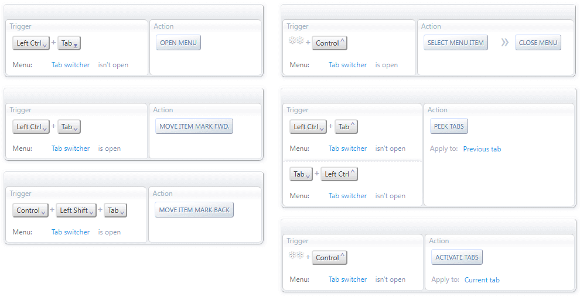
As you can see, the above settings package contains 6 actions. Let's go one by one explaning what they do.
The first 4 actions implement use case #3.
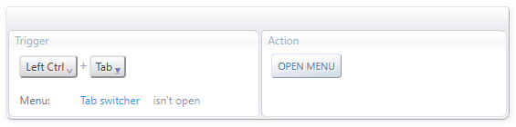
When the Tab switcher menu is not open, holding down Ctrl+Tab for 0.4 secons will open the Tab switcher menu.
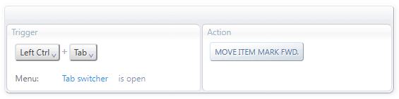
When the Tab switcher menu is open, pressing Ctrl+Tab will move the item mark to the next tab.
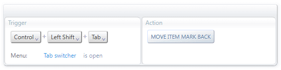
When the Tab switcher menu is open, pressing Ctrl+Shift+Tab will move the item mark to the previous tab.
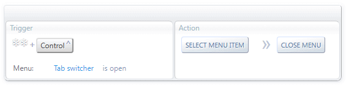
When the Tab switcher menu is open, releasing Ctrl will select the marked tab (i.e. the tab will be activated) and the
Tab switcher menu will be closed.
The last 2 actions implement use case #2.
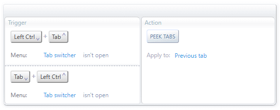
When the Tab switcher menu is not open, releasing Tab while Ctrl is held down (or vice versa) will activate
the previous tab without changing the tab's position in the MRU order.
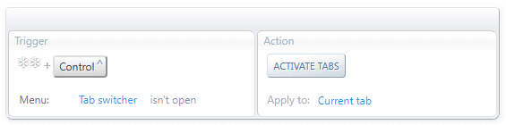
When the Tab switcher menu is not open, releasing Ctrl will put the current tab at the top of the MRU order.
 Forum
Install now from theChrome Web Store
Forum
Install now from theChrome Web Store